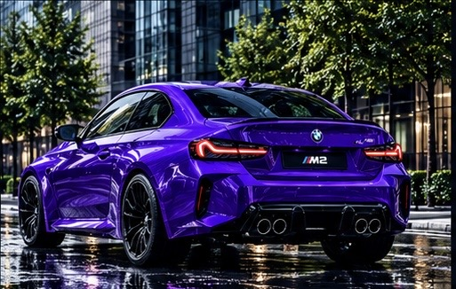

ENGINE
3.0L S58 M TwinPower Turbo Inline-6
The BMW M2 features a powerful 3.0-liter inline-six engine with M TwinPower Turbo technology, delivering impressive acceleration, precise handling, and thrilling performance. Every press of the accelerator unleashes the raw power of M engineering, creating an exciting driving experience on every road.

THE CAR
BMW M2
The BMW M2 combines aggressive styling, luxury, and motorsport-inspired performance. Its bold front grille, muscular proportions, and aerodynamic design create an unmistakable presence on the road. Built for drivers who demand thrilling performance, precise handling, and everyday comfort.

THE FEELING
Born to Perform
The BMW M2 is more than just a car. It represents passion, precision, and the spirit of motorsport. From its powerful engine sound to its responsive handling, every drive delivers an unforgettable connection between driver and machine.